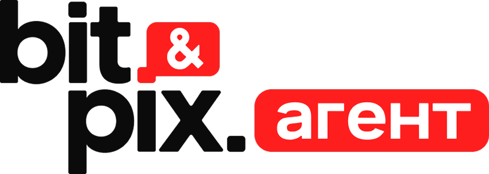

| # | Дата | Рубрика | Тема поста | Формат | Статус | Заметки |
|---|---|---|---|---|---|---|
| Неделя 1 · 27–29 апреля | ||||||
| 01 | 27 апр Пн |
Команда |
Знакомьтесь: Биопринтех — кто мы и зачем
Стартовый пост. Кто создал, какую технологию развиваем, почему газоперенос — это важно
|
Текст + фото | Черновик | Фото команды / лаборатории — запросить у заказчика |
| 02 | 29 апр Ср |
Технология |
Что такое газоперенос — объясняем простым языком
Принцип растворения газа в воде, почему стандартные аэраторы не справляются
|
Карусель | Черновик | Схемы / инфографика |
| Неделя 2 · 5–7 мая | ||||||
| 03 | 05 мая Пн |
Продукт |
Аэратор ЗГ: как утроить плотность посадки рыбы
Плотность ×3, энергия −25%, окупаемость 18 мес. Конкретные цифры — без воды
|
Карусель | Черновик | Фото/видео аэратора ЗГ в работе |
| 04 | 07 мая Ср |
Технология |
0,8 руб/м³ — цена кислорода, которая меняет рентабельность
Сравнение затрат на аэрацию: стандарт vs наше решение. Экономика одного хозяйства
|
Текст + таблица | Черновик | Можно оформить инфографикой-сравнением |
| Неделя 3 · 12–16 мая | ||||||
| 05 | 12 мая Пн |
Отрасль |
Нефтехим платит 400 млрд в год за экологию. Можно иначе
Боли промышленных предприятий: эко-платежи, очистка стоков ниже 70%, оборотка меньше 50%
|
Текст | Черновик | Таргет на ЦА нефтехим |
| 06 | 14 мая Ср |
Продукт |
Аэратор МГ: 95% очистки стоков без химии — как это работает
Модульная электрофлотация, туннельная гидратация, оборотная вода +50%
|
Видео | Черновик | Нужны сценарий + видео с установки МГ |
| 07 | 16 мая Пт |
НИОКР |
От ТЗ до патента за 3–6 месяцев: как мы делаем заказной R&D
Процесс НИОКР: постановка задачи → разработка → тест → патент. CAPEX −30–50%
|
Карусель | Черновик | Снижение CAPEX — ключевой тезис для B2B |
| Неделя 4 · 19–23 мая | ||||||
| 08 | 19 мая Пн |
Команда |
Учёный в поле: как выглядит наша экспедиция на водоём
Лайфстайл / founder story — показать людей за технологией. Живые фото с объекта
|
Фоторепортаж | Черновик | Фото с выезда — запросить у заказчика заранее |
| 09 | 21 мая Ср |
Технология |
Эвтрофикация: почему водоёмы умирают — и как их оживить
Образование: цветение воды, дефицит кислорода, как аэрация восстанавливает экобаланс
|
Карусель | Черновик | Нужен визуал до/после водоёма |
| 10 | 23 мая Пт |
Кейс |
Восстановление водного объекта: 4 этапа от анализа до мониторинга
Детальный кейс: анализ → очистка → экобаланс → мониторинг. Отложения → цементная смесь/гумус
|
Карусель | Черновик | Нужны фото объекта до/после — запросить |
| Неделя 5 · 26–30 мая | ||||||
| 11 | 26 мая Пн |
Отрасль |
ESG-тренд: декарбонизация CH₄ как конкурентное преимущество
Для ESG-директоров: нацпроект «Экология», требования к промпредприятиям, как газонасыщение помогает
|
Текст | Черновик | CH₄ ×50 — ключевой тезис для ESG-аудитории |
| 12 | 28 мая Ср |
Продукт |
Адсорбционное оборудование: чистые стоки без штрафов
Очистка промстоков и ливнёвок. Как снизить эко-платежи на 20% и уйти от нарушений ПДК
|
Текст + фото | Черновик | Фото оборудования от заказчика |
| 13 | 30 мая Пт |
НИОКР |
За 6 месяцев от идеи до патента: история одного проекта
Founder story: конкретная история НИОКР — задача клиента, путь решения, результат с цифрами
|
Видео / Лонгрид | Черновик | Интервью с разработчиком — нужен сценарий |